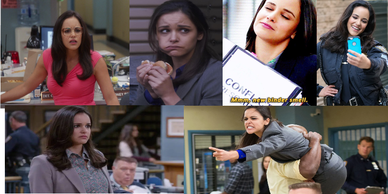

Amy Santiago
Born between 1982 and 1983
Occupation Detective at the 99th Precinct
Family:
● Victor Santiago (father)
● Camila Santiago (Mother)
● Tony Santiago (brother)
● David Santiago (brother)
● Teddy Wells (obsessive ex)
● Jake Peralta (husband)
Detective Santiago is one of the shows main characters, she’s always desperate to have the approval of the people senior to her. She is desperate to become a Sargent and looks for a mentor to help, and she chooses Raymond Holt. She is very competitive, and always trying to be the best, even against herself. Amy is very intelligent and resourceful however can be quite the jealous type especially towards Jake Peralta. Amy comes from a Cuban-American family, she has always been impeccably well behaved and sucked up to people of higher rank or authority to her. Amy often embarrasses herself in front of Captain Holt in her desperate attempts to impress him. She also spends a lot of time organizing her life and all of its aspects by using binders. She has a binder for most situations in preparation and can’t cope without an organized structure of events. Is also a horrendous cook and terrible at hosting parties which she tries at Thanksgiving to host a dinner for the whole squad.
